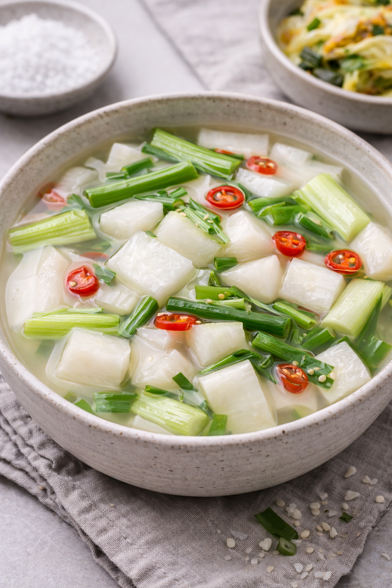

김치란?
김치는 배추를 주재료로 한 한국의 대표적인 발효 음식입니다.
저장 음식으로 시작되어 한국의 역사와 문화를 담고 있습니다.
배추김치 만드는 법
- 배추를 자르고 소금에 절인다.
- 숨이 죽을 때까지 둔다.
- 헹군 후 물기를 뺀다.
- 양념을 만든다.
- 무를 섞는다.
- 배추에 양념을 바른다.
- 용기에 담는다.
- 1~2일 발효한다.
- 냉장 보관한다.
다양한 김치 종류
-
깍두기
아삭한 무를 깍둑썰어 만든 매콤한 김치입니다.
-
오이소박이
신선한 오이에 양념을 넣은 상큼한 김치입니다.
-

동치미
맑은 국물의 시원하고 담백한 물김치입니다.
-
총각김치
알타리무로 만든 전통 김치입니다.
-
갓김치
갓으로 담근 향이 강하고 깊은 맛의 김치입니다.